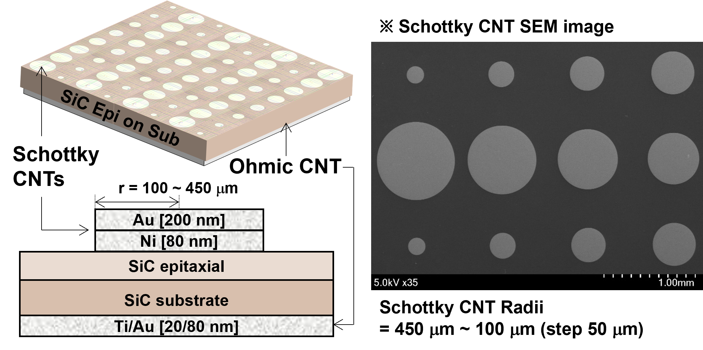
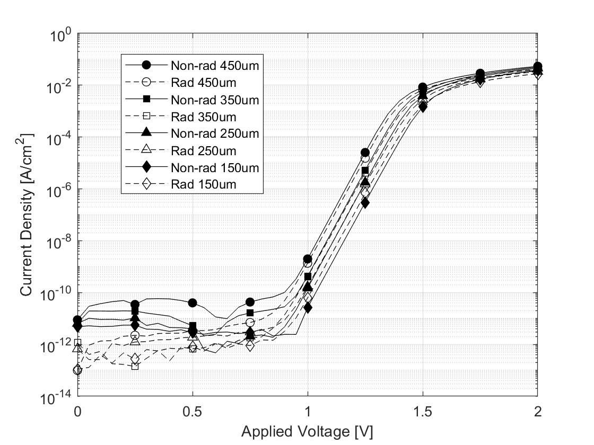

Paper
Asymptotic Series Model for Quantum Transport at Defective Interfaces
Kibeom Kim1, Young Joon Yoon2*, Jea Hwa Seo3*
2School of Electronics and Mechanical Engineering, Gyeongkuk National University, Andong, Republic of Korea (yjyoon@gknu.ac.kr)
3Advanced Semiconductor Research Center, Power Semiconductor Research Division, Korea Electrotechnology Research Institute (KERI), Changwon-si, Republic of Korea (jaehwaseo@keri.re.kr)
*Correspondence: Young Jun Yoon and Jae Hwa Seo
Abstract
본 연구는 현상론적 피팅(Phenomenological fitting) 변수에 의존해 온 기존 고전적 열이온 방출 이론의 한계를 극복하고, 결함이 다수 존재하는 금속-반도체 계면의 전하 수송을 정량적으로 규명하는 대수적 양자 수송 모델을 제시하였다. 비평형 그린 함수(NEGF)와 란다우어-뷔티커 전송 형식을 결합하여, 계면 결함에 의한 비탄성 산란 및 양자 결속 파괴 현상을 비 에르미트 유효 해밀토니안의 복소 자기 에너지로 정의하고 이를 로렌츠 스펙트럼 함수로 모델링하였다. 복잡한 수송 적분식을 해석적으로 풀이하기 위해 왓슨의 보조정리(Watson’s Lemma)를 이용한 점근 급수 전개를 도입하였으며, 결과적으로 직류(DC) 측정 데이터만으로 미시적 양자 산란 진폭($\eta_0$)과 결함 완화 시간을 추출하는 닫힌 해(Closed-form solution)를 도출하였다. 구축된 모델을 고에너지 양성자가 조사된 4H-SiC 쇼트키 배리어 다이오드(SBD)에 적용한 결과, 피폭 후 $3.13 \times 10^{13} \sim 4.82 \times 10^{13} \text{ cm}^{-2}$ 대역으로 급증하는 계면 트랩 밀도를 정량화하였다. 또한 소자의 가장자리 둘레 비율(Perimeter-to-Area ratio)을 변수로 한 분석을 통해, 소형 소자일수록 주변부 결함 누적으로 인해 양자 결속 거리가 단축되는 기하학적 스케일링 특성을 확인하였다. 본 해석 방법론은 4H-SiC뿐만 아니라 차세대 와이드 밴드갭(UWBG) 소재 및 2차원 반데르발스 이종 접합 등 다양한 비이상적 계면의 전하 수송 메커니즘을 분석하는 보편적인 이론적 기반을 제공한다.
1. Introduction
금속과 반도체가 접합되는 계면은 전자 소자의 전하 수송 특성을 결정하는 주요 물리적 영역이다. 고체물리학 및 반도체 소자 공학에서는 이 계면을 통과하는 전하 수송 현상을 해석하기 위해 고전적인 열이온 방출(Thermionic Emission, TE) 이론과 열이온-전계 방출(TFE) 이론이 주로 활용되어 왔다 [1.61]. 결함 밀도가 통제된 이상적인 단결정 계면에서 이러한 준고전적(Semi-classical) 근사는 유효하며, 소자의 전도 특성은 이론적인 리처드슨 상수와 장벽 높이에 의해 결정된다. 그러나 방사선 피폭이나 열화 스트레스에 노출된 소자, 혹은 초광대역 밴드갭(UWBG) 소재 및 2차원 소재 기반의 이종 접합과 같은 비이상적 계면에는 원자 단위의 점 결함(Point defects)과 댕글링 본드(Dangling bonds)가 다수 존재한다 [1.3,1.4,1.5,1.6,1.10,1.41]. 전자는 이러한 계면을 통과할 때 포텐셜 장벽 투과 외에도 밀집된 결함망에 의한 비탄성 산란(Inelastic scattering)과 양자 결속 파괴(Quantum decoherence)를 겪는다. 이로 인해 측정된 전류-전압(I-V) 특성은 고전적 이론의 예측값에서 벗어나 누설 전류가 증가하는 비선형적 거동을 보인다 [1.8,1.9]. 기존 연구에서는 이를 보상하기 위해 이상 계수($n$)를 증가시키거나 유효 리처드슨 상수를 경험적으로 하향 조정하는 현상론적 피팅(Phenomenological fitting) 방식을 주로 사용해 왔다 [1.1,1.2,1.51,1.52]. 하지만 전자의 유효 질량과 절대 온도로 정의되는 열역학적 상수를 변형하여 열화를 설명하는 접근은 상태 밀도 보존 법칙과 상충하며, 물리적 일관성을 확보하는 데 한계가 존재한다 [1.7].
이러한 해석적 한계를 극복하기 위해, 본 연구는 경험적 피팅 변수에 의존하지 않는 해석적 양자 수송 모델을 제안한다. 란다우어-뷔티커(Landauer-Büttiker) 전송 형식론 및 비평형 그린 함수(Non-Equilibrium Green’s Function, NEGF) 이론을 기반으로 계면 결함에 의한 산란을 비 에르미트(Non-Hermitian) 유효 해밀토니안의 복소 고유값으로 취급하였다 [1.42,1.43,1.44]. 이를 통해 전자의 1차원 수송 스펙트럼을 기존의 디랙 델타 함수(Dirac delta function)에서 로렌츠(Lorentzian) 분포로 확장하여 양자역학적 산란 및 위상 붕괴 효과를 거시 전류 방정식에 반영하였다. 또한, 페르미-디랙 통계와 로렌츠 스펙트럼 함수가 결합된 수송 적분식을 수치 해석적 근사 없이 대수적 해(Closed-form solution)로 유도하기 위해 두 단계의 점근 해석학(Asymptotic Analysis) 기법을 도입하였다. 장벽 정점 부근의 피크 기여분은 소호츠키-플레멜리 정리(Sokhotski-Plemelj theorem)를 적용하여 처리하고, 낮은 에너지 대역에서 발생하는 비이상적 산란 꼬리 기여분은 라플라스 방법(Laplace’s Method)과 왓슨의 보조정리(Watson’s Lemma)를 이용하여 무한 점근 급수(Asymptotic series)로 전개하였다. 결과적으로 직류(DC) 측정 데이터만으로 미시적 계면 산란 진폭과 양자 완화 시간을 계산할 수 있는 대수적 해석해를 도출하였다.
제안된 이론적 모델의 타당성을 교차 검증하기 위해, 방사선 취약성 평가의 표준 소자인 4H-SiC 쇼트키 배리어 다이오드를 실증 사례로 채택하였다. 선형 가속기를 활용한 55 MeV 양성자 조사 실험을 통해 생성된 격자 손상 데이터를 본 모델에 적용한 결과, 열역학 상수를 고정한 상태에서도 거시 전류의 편차를 미시적 산란폭으로 치환하여 피폭 전후의 계면 트랩 밀도($N_{it}$) 변화를 정량적으로 추출하였다. 더 나아가, 소자의 크기 및 가장자리 둘레 비율(Perimeter-to-Area ratio)을 변수로 삼아 물리적 스케일링 특성을 분석하였다.
2. 물리적 전제 및 기호 정의
본 연구에서 제안하는 양자 수송 모델의 수학적 전개에 앞서, 수식에 사용되는 주요 보편 상수 및 소자 물성 기호를 규정하고 모델에 적용되는 물리적 가정들을 명시한다. 주요 기호 및 물성 정의수송 방정식 유도에 활용되는 4H-SiC의 물성 및 주요 열역학 변수는 다음과 같이 정의된다.
- $e$: 기본 전하량 ($1.602 \times 10^{-19}\text{ C}$)
- $k_B$: 볼츠만 상수 ($1.38 \times 10^{-23}\text{ J/K}$)
- $h, \hbar$: 플랑크 상수 및 환산 플랑크 상수 ($\hbar = h/2\pi$)
- $T$: 절대 온도 (K)
- $m^*$: 4H-SiC 전도대 전자의 상태 밀도 유효 질량
- $A^*$: 리처드슨-더쉬먼 상수 ($A^* = 4\pi e m^* k_B^2 / h^3 \approx 146\text{ A cm}^{-2}\text{K}^{-2}$)
- $N_C, N_D$: 유효 상태 밀도 및 도너 도핑 농도 ($\text{cm}^{-3}$)$V$: 순방향 인가 전압
- $V_{bi}$: 내장 전위 (Built-in potential)
- $E_c$: 반도체 벌크의 전도대 최하단 에너지 ($E_c = eV + k_BT \ln(N_C/N_D)$)
- $\Phi_B$: 정전기적 유효 장벽 깊이 ($\Phi_B = e(V_{bi} + V_n)$)
- $\Delta E$: 전도대 하한선 기준 유효 장벽 깊이 ($\Delta E = \Phi_B - E_c = e(V_{bi} - V)$)
- $\eta_0$: 계면 결함 산란에 기인한 에너지 감쇄 폭 (Energy broadening)
수송 현상의 해석적 해를 도출하기 위해 본 모델은 다음의 물리적 조건들을 전제한다.
- 단일 대역 전송 (Single-band transport): 전도대(Conduction band)를 통한 전자 수송만을 고려하며, 가전자대를 통한 공간 전하 영역 재결합(SRH)의 영향이 배제되는 중간 전압 구간을 상정한다.
- 계면 산란 지배 (Interface-scattering dominant): 방사선 피폭 등으로 인해 계면 결함 밀도($N_{it}$)가 상대적으로 우세한 환경을 상정한다.
- 마티센의 법칙(Matthiessen’s rule)에 따라 캐리어의 전체 완화 시간 $\tau$는 계면 트랩에 의한 비탄성 산란율($\tau_{it}$)에 주로 의존한다고 간주한다 ($1/\tau \approx 1/\tau_{it}$).
- 포물선 대역 근사 (Parabolic band approximation): 전도대 에지(Band edge) 근처의 전자에 대해 $E(\mathbf{k}) = \Phi_B + \hbar^2\mathbf{k}^2 / 2m^*$의 2차 함수적 분산 관계가 성립함을 가정한다.
- 볼츠만 통계 한계 (Boltzmann statistics limit): 비축퇴(Non-degenerate) 조건($E - \mu \gg k_BT$)을 만족하는 에너지 대역에서 페르미-디랙(Fermi-Dirac) 분포 함수를 맥스웰-볼츠만(Maxwell-Boltzmann) 지수 함수로 근사하여 적용한다.
3. 1차원 양자 수송
이상적인 단결정 반도체 내부의 전자는 주기적 전위 내에서 에르미트(Hermitian) 해밀토니안에 의해 기술되며 실수 고유값을 갖는다. 그러나 방사선 피폭이나 이종 접합 형성 등으로 계면에 결함이 존재할 경우, 전자는 계면을 투과하는 과정에서 비탄성 산란을 겪는다. 이러한 열린 양자계(Open quantum system)의 소산(Dissipation) 과정을 기술하기 위해 복소 자기 에너지(Complex self-energy, $\Sigma = \Delta - i\eta_0$)를 포함하는 유효 해밀토니안 $\hat{H}_{eff}$를 도입한다 [3.1,3.2,3.5,3.6,3.41,3.42].
$$ \hat{H}_{eff}(\mathbf{k},V) = E_r(\mathbf{k},V) - i\eta_0 \quad\text{(1)} $$여기서 $E_r(\mathbf{k},V)$는 인가 전압 $V$에 의해 변조된 운동 에너지이며, 허수부 $\eta_0$는 계면 결함 산란에 기인하는 비탄성 산란 붕괴율, 즉 에너지 감쇄 폭(Energy broadening)이다. 해당 연산자로부터 지연 그린 함수(Retarded Green’s function)를 구성하고, 이의 허수부(Imaginary part)를 취하여 시스템의 스펙트럼 함수 $A(E, \mathbf{k}, V)$를 도출하면 다음과 같다.
$$ A(E, \mathbf{k}, V) = \frac{1}{\pi} \frac{\eta_0}{(E - E_r(\mathbf{k},V))^2 + \eta_0^2} \quad\text{(2)} $$이상적인 시스템의 스펙트럼 함수는 디랙 델타 함수(Dirac delta function)로 수렴하지만, 비이상적 계면에서는 산란 진폭 $\eta_0$에 의해 유한한 반치폭($2\eta_0$)을 가진 로렌츠(Lorentzian) 분포를 나타낸다. 이는 결함과의 상호작용에 따른 전자 상태의 에너지 불확정성(Uncertainty)을 의미한다. 통계역학적 수명 모델($P(t) \propto e^{-t/\tau}$)에 기반할 때, 유효 해밀토니안의 허수부 $\eta_0$는 파동 함수의 시간적 소산(Dissipation)을 유발하며, 결과적으로 계면 산란에 의한 캐리어의 양자 완화 시간(Quantum relaxation time) 다음과 같이 정의할 수 있다.
$$ \tau_{it} = \frac{\hbar}{2\eta_0} \quad\text{(3)} $$이는 반치폭($\Gamma = 2\eta_0$)과 수명 사이의 하이젠베르크 에너지-시간 불확정성 관계($\Gamma \tau_{it} = \hbar$)를 만족한다. 미시적 양자 상태 스펙트럼을 계면의 거시적 직류(DC) 전류로 변환하기 위해 란다우어-뷔티커 전송 형식론을 적용한다 [3.3,3.4]. 정상 상태(Steady-state)의 전체 전류 밀도 $J(V)$는 3차원 운동량 $\mathbf{k}$와 총 에너지 $E$에 대한 적분으로 구성되며, 순방향 수송 조건($k_z > 0$)과 볼츠만 근사($E - \mu \gg k_BT$)를 적용하여 $\Delta F(V) = \exp(eV/k_BT) - 1$을 유도한다. 결함 산란이 접합면에 수직인 $z$ 방향의 병진 대칭성(Translational symmetry) 붕괴에 주로 영향을 미치고 횡방향($\perp$) 운동량은 보존되는 1차원 산란 문제로 상정한다 [3.43]. 이에 따라 총 에너지는 $E = E_z + \epsilon_\perp$로 분리되며, 전류 밀도 식은 다음과 같이 직교 분해된다.
$$ J(V) = 2e \Delta F(V) \int_{-\infty}^{\infty} dE_z \exp\left(-\frac{E_z}{k_BT}\right) \int_0^\infty \frac{dk_z}{2\pi} v_z(k_z) A_z(E_z, \epsilon_z) \int_0^\infty \frac{d^2\mathbf{k}_\perp}{(2\pi)^2} \exp\left(-\frac{\epsilon_\perp}{k_BT}\right) \quad\text{(4)} $$수송 적분식 내 횡방향 운동량($\mathbf{k}_\perp$) 성분은 포물선 대역 근사(Parabolic band approximation) 하에서 해석적으로 적분되어 리처드슨-더쉬먼 상수($A^* = 4\pi e m^* k_B^2 / h^3$)로 환원된다. 이에 따라 3차원 공간의 전체 전류 밀도 방정식은 수직 방향 운동 에너지($\epsilon_z$) 변수에 종속되는 1차원 양자 전송 함수 $U(E_z)$의 문제로 축소된다. 수직 방향의 공간 투과 확률을 의미하는 $U(E_z)$를 아크탄젠트 정적분으로 풀이하면 다음과 같은 해석해(Closed-form)가 산출된다.
$$ U(E_z) = \int_0^\infty d\epsilon_z \frac{1}{\pi} \frac{\eta_0}{(E_z - \Phi_B - \epsilon_z)^2 + \eta_0^2} = \frac{1}{2} + \frac{1}{\pi} \arctan\left(\frac{E_z - \Phi_B}{\eta_0}\right) \quad\text{(5)} $$전자가 전도대 최하단($E_c$) 이상의 상태에만 존재함을 헤비사이드 계단 함수 $\Theta(E_z - E_c)$로 규정하면, 전체 전류 적분식은 다음과 같이 1차원 수직 에너지 적분 $\mathcal{I}_z$ 형태로 정의된다.
$$ J(V) = A^*T^2 \frac{\Delta F(V)}{k_BT} \int_{E_c}^{\infty} dE_z \, U(E_z) \exp\left(-\frac{E_z}{k_BT}\right) = A^*T^2 \frac{\Delta F(V)}{k_BT} \mathcal{I}_z \quad\text{(6)} $$4. Asymptotic analysis
앞서 도출된 1차원 거시 전류 밀도 적분식은 로렌츠 전송 함수 $U(E_z)$와 볼츠만 지수 감쇄 함수 $\exp(-E_z/k_BT)$의 곱으로 구성되어 있으며, 해석적인 기본 함수 형태로 적분되지 않는다. 수치 해석 시 발생할 수 있는 절단 오차와 연산 비용 문제를 해결하기 위해 본 장에서는 점근 해석학(Asymptotic analysis)을 도입한다. 전체 수송 적분 $\mathcal{I}_z$를 물리적 기여가 구분되는 두 영역, 즉 장벽 정점 부근의 피크 기여분($\mathcal{I}_{peak}$)과 전도대 하한선 부근의 경계 기여분($\mathcal{I}_{boundary}$)의 합으로 분할하여 전개한다.
$$ \mathcal{I}_z = \int_{E_c}^{\infty} dE_z \, U(E_z) \exp\left(-\frac{E_z}{k_BT}\right) = \mathcal{I}_{peak} + \mathcal{I}_{boundary} \quad\text{(7)} $$에너지가 쇼트키 장벽 정점에 근접한 구간($E_z \approx \Phi_B$)에서는 전자의 열에너지가 계면 산란에 의한 에너지 감쇄폭($\eta_0$)보다 크므로, 산란 효과가 미미한 극한 조건($\eta_0 \to 0^+$)을 적용할 수 있다. 이 조건에서 비 에르미트 연산자 기반의 로렌츠 스펙트럼 함수는 소호츠키-플레멜리 정리(Sokhotski-Plemelj theorem)에 의해 디랙 델타 함수(Dirac delta function) $\delta(E_z - \Phi_B)$로 수렴한다. 적분식 내부의 전송 함수 커널이 장벽 정점에서 델타 함수로 환원됨에 따라, 적분 기호가 소거되며 고전적인 이상 열이온 방출(Ideal thermionic emission)에 해당하는 피크 기여분 $\mathcal{I}_{peak}$가 도출된다.
$$ \mathcal{I}_{peak} = k_BT \exp\left(-\frac{\Phi_B}{k_BT}\right) \quad\text{(8)} $$이는 산란이 배제된 이상적 계면에서의 거시 전류 거동을 나타내며, 본 양자 수송 모델이 고전적 열이온 방출 이론을 극한 조건으로서 포함(Correspondence principle)하고 있음을 보여준다.
장벽을 넘지 못하는 낮은 에너지 대역($E_z < \Phi_B$)에서는 $\eta_0$의 영향이 증가하며, 양자 산란에 의한 전송 확률이 지수 감쇄 함수와 결합하여 비이상적 꼬리(Tail) 전류 기여분 $\mathcal{I}_{boundary}$를 형성한다. 이 적분은 $\exp(-E_z/k_BT)$의 특성상 적분 하한선인 $E_c$ 근방에 주요 기여분이 집중된다. 라플라스 방법(Laplace’s Method)에 따라, 적분 변수를 $t = E_z - E_c$로 치환하여 하한선을 0으로 이동시킨다.
$$ \mathcal{I}_{boundary} = \exp\left(-\frac{E_c}{k_BT}\right) \int_{0}^{\infty} dt \, U(t + E_c) \exp\left(-\frac{t}{k_BT}\right) \quad\text{(9)} $$위 식에 왓슨의 보조정리(Watson’s Lemma)를 적용하기 위해 함수 $U(t + E_c)$를 $t=0$ 근처에서 테일러 급수로 전개한다. 유효 장벽 깊이 $\Delta E = \Phi_B - E_c$가 산란폭 $\eta_0$보다 크다는 조건($\Delta E \gg \eta_0$) 하에서, $n$계 도함수는 $U^{(n)}(E_c) \approx \frac{\eta_0}{\pi} \frac{n!}{(\Delta E)^{n+1}}$로 근사된다. 전개된 각 다항식 항에 지수 함수를 곱하여 항별 적분(Term-by-term integration)을 수행하면, 감마 함수의 성질에 의해 다음과 같은 점근 급수(Asymptotic series) 형태가 도출된다 [4.1,4.2].
$$ \mathcal{I}_{boundary} = \left[ \frac{\eta_0 k_BT}{\pi \Delta E} \exp\left(-\frac{E_c}{k_BT}\right) \right] \cdot \mathcal{F}_{asymp} \quad\text{(10)} $$여기서 $\mathcal{F}_{asymp}$는 무차원 점근 보정항으로, 다음과 같이 정의된다.
$$ \mathcal{F}_{asymp} = 1 + \sum_{n=1}^{\infty} n! \left( \frac{k_BT}{\Delta E} \right)^n \quad\text{(11)} $$이러한 점근 급수 전개는 수치 적분 과정을 대수적 다항식으로 변환한다. 왓슨의 보조정리에서 파생된 급수는 $n \to \infty$일 때 팩토리얼($n!$) 항에 의해 발산하지만, 푸앵카레(Poincaré) 점근 전개에 따르면 전개 파라미터가 작을 때 유한 차수 $N$에서 급수를 절단(Truncation)하면 발생하는 나머지 오차(Remainder)는 다음 차수($N+1$) 항의 크기로 제한된다. 본 모델의 전개 파라미터($k_BT/\Delta E$)는 1보다 작으므로, 1차항($n=1$)에서 전개를 절단하여 오차가 제어된 대수적 해를 구성하였다. 도출된 $\mathcal{I}_{peak}$와 $\mathcal{I}_{boundary}$를 전체 전류 밀도 $J(V)$ 방정식에 대입하면, 측정되는 거시 전류 $J_{exp}(V)$는 고전적 이상 전류 성분과 양자 산란 꼬리 성분의 선형 결합으로 표현된다.
$$ J_{exp}(V) = \underbrace{ A^*T^2 \Delta F(V) \exp\left(-\frac{\Phi_B}{k_BT}\right) }_{J_{ideal}(V)} + \underbrace{ A^*T^2 \Delta F(V) \frac{\eta_0}{\pi \Delta E} \exp\left(-\frac{E_c}{k_BT}\right) \mathcal{F}_{asymp} }_{\text{Non-ideal Scattering Tail}} \quad\text{(12)} $$이것은 기존 관행적 피팅 방식의 한계를 보완한다. 거시 전류의 편차($J_{exp} - J_{ideal}$)를 상쇄하기 위해 물질 고유 상수인 리처드슨 상수($A^*$)를 유효값으로 조정할 필요 없이, 해당 편차를 계면 산란 진폭 $\eta_0$의 기여분으로 할당할 수 있다. 밴드 에지 $E_c = eV + k_BT \ln(N_C/N_D)$ 및 $\Delta F(V)$의 관계를 대입하여 정리하면 다음과 같은 $\eta_0$을 구할 수 있다.
$$ \eta_0 = \frac{\pi e(V_{bi}-V)}{\mathcal{F}_{asymp}} \left[ \frac{J_{exp}(V)}{A^*T^2} \cdot \frac{N_C/N_D}{1 - \exp\left(-\frac{eV}{k_BT}\right)} - \exp\left(-\frac{e(V_{bi}-V)}{k_BT}\right) \right] \quad\text{(13)} $$이 해석해(Closed-form solution)는 현상론적 피팅 변수 없이, 직류(DC) I-V 측정 데이터($J_{exp}, V$)와 기본 물성 파라미터($A^*, V_{bi}, N_C, N_D$)만을 기반으로 계면 산란 진폭 $\eta_0$를 추출하는 모델을 제공한다.
5. C-V & I-V curves analysis

FIG. 1. 제작된 4H-SiC 쇼트키 배리어 다이오드(SBD)의 소자 구조 모식도 및 주사전자현미경(SEM) 표면 이미지. 좌측의 3차원 및 단면 모식도는 SiC 에피택셜 층 상단에 형성된 쇼트키 전극(Ni/Au, 80/200 nm)과 기판 하단의 오믹 전극(Ti/Au, 20/80 nm) 적층 구조를 나타낸다. 우측의 평면 SEM 이미지는 소자의 기하학적 크기 의존성 분석을 위해 100 $\mu$m부터 450 $\mu$m까지 50 $\mu$m 간격으로 세분화되어 패터닝된 원형 쇼트키 접점(Schottky CNT) 어레이를 보여준다.
앞서 점근 급수 기반의 해석 모델을 고에너지 양성자 조사 환경에 노출된 4H-SiC 쇼트키 배리어 다이오드(SBD)의 전하 수송 특성 분석에 적용한다. 해당 소자는 기판 상단에 약 $1.84 \times 10^{16}\text{ cm}^{-3}$ 농도의 질소(N)가 도핑된 10 $\mu$m 두께의 에피택셜 층이 성장된 구조를 지닌다. 소자의 후면에는 전자빔 증착(E-beam evaporation) 방식을 통해 Ti/Au 기반의 오믹 금속층을 형성한 뒤, 접촉 저항을 최소화하기 위해 $950^{\circ}\text{C}$의 질소 분위기에서 급속 열처리(RTA)를 진행하였다. 전면부의 쇼트키 전극은 리소그래피 공정을 거쳐 Ni/Au 금속을 증착하여 완성하였으며, 금속과 반도체 계면의 특성 유지를 위해 전면부 증착 이후의 추가 열처리는 배제되었다. 소자의 기하학적 스케일이 방사선 취약성에 미치는 영향을 교차 검증하기 위해 쇼트키 접점의 반지름($r$)을 100 $\mu$m부터 450 $\mu$m까지 50 $\mu$m 단위로 세분화하여 실험군을 제작하였다 (see 그림 [1]). 양성자 조사 실험은 한국원자력연구원(KAERI) 산하 양성자가속기연구센터(KOMAC)의 100 MeV 선형 가속기를 활용하여 수행되었다. 실험에 사용된 소자들은 외부 인가 전압이 없는 상태에서 55 MeV 에너지의 양성자 빔에 $1 \times 10^{14}\text{ cm}^{-2}$의 누적 조사량(Fluence)으로 상온 노출되었다.
소자의 초기 상태를 정의하는 빌트인 포텐셜($V_{bi}$)과 유효 도핑 농도($N_D$)를 분석 모델에 적용하기 위해 도출하였다. 이 두 파라미터는 소자의 접합 면적 및 주변부 상태에 따라 다르게 형성된다. 따라서, 각 반지름별로 개별적인 C-V 측정을 수행하여 해당 소자의 $V_{bi}$와 $N_D$를 각각 독립적으로 추출하였다. 반면, 거시 전류 방정식에 적용되는 리처드슨 상수는 4H-SiC의 상태 밀도를 반영하는 실험적 대푯값($A^* = 146\text{ A cm}^{-2}\text{K}^{-2}$)으로 고정하였다. 1차원 지향성 열속도($v_R$) 산출에 요구되는 수송 유효 질량은 4H-SiC의 결정학적 이방성(Anisotropy)을 고려하여 c-축 방향 수송 유효 질량($m_t = 0.42m_0$)을 별도로 적용하였다 [5.1,5.2,5.41]. 그림 [X] 및 그림 [X]에 나타난 바와 같이, 고에너지 양성자 조사 이후 4H-SiC SBD 소자에서는 거시적인 커패시턴스의 하락과 더불어, 전압 대역 및 소자 크기에 의존적인 비선형적 전류 변동이 관찰된다. 이는 양성자와 격자 원자 간의 탄성 충돌로 유발된 변위 손상이 에피택셜 층 내부의 물리적 평형 상태와 1차원 수직/2차원 주변부 전하 수송 메커니즘을 복합적으로 변화시켰음을 의미한다.

FIG. 2. 55 MeV 양성자 조사($1 \times 10^{14} \text{ cm}^{-2}$) 전후 4H-SiC SBD의 역방향 정전용량-전압(C-V) 특성. 소자 반지름($r = 150, 250, 350, 450 \, \mu\text{m}$)에 따른 피폭 전(Non-rad, 실선)과 피폭 후(Rad, 점선)의 정전용량 거동을 역방향 인가 전압($0 \sim -30$ V) 범위에서 비교하여 나타내었다. 양성자 피폭에 의한 에피택셜 층 내 운반자 제거 효과(Carrier removal effect)로 인해 모든 소자 크기에서 정전용량의 하락이 관찰된다.
C-V 측정 결과를 살펴보면 양성자 조사 후 전체 역방향 전압 구간에 걸쳐 접합 커패시턴스 값이 감소하는 경향을 보인다 (see 그림 [2]). 이러한 정전용량의 감소는 주로 에피택셜 층 내부의 운반자 제거 효과(Carrier removal effect)에 기인한다 [5.3,5.62]. 고에너지 양성자 조사로 인해 다수의 프렌켈 쌍(Frenkel pairs)이 생성되며, 이 과정에서 발생한 탄소 및 규소 공석이나 침입형 원자들이 이동하여 기존의 치환형 질소 도너 원자와 결합하게 된다 [5.11,5.51]. 이러한 결합은 전기적으로 불활성인 복합체를 형성하여 질소 도너를 비활성화(Nitrogen donor deactivation)시킨다. 결과적으로 얕은 준위의 도너 농도가 감소함에 따라 유효 도핑 농도($N_{eff}$)가 하락하고, 동일 전압 대비 공핍층의 폭이 확장되어 거시적인 커패시턴스의 감소로 이어진다.

FIG 3. 55 MeV 양성자 조사($1 \times 10^{14} \text{ cm}^{-2}$) 전후 4H-SiC SBD의 순방향 전류 밀도-전압(I-V) 특성(Semi-log scale). 소자 반지름($r = 150, 250, 350, 450 \text{ } \mu\text{m}$)에 따른 피폭 전(Non-rad, 실선 및 채워진 기호)과 피폭 후(Rad, 점선 및 빈 기호)의 전류 거동을 비교하였다. 1.55 V 이상의 고전압 대역에서는 직렬 저항 증가에 의해 모든 소자에서 공통적인 전류 밀도의 하락이 관찰된다. 반면 1.55 V 미만의 대역에서는 소자 크기에 따른 교차(Crossover) 현상이 나타난다. 대형 소자(450, 350 $\mu$m)는 피폭 후 전류가 전반적으로 감소하지만, 가장자리 둘레 비율(P/A ratio)이 높은 소형 소자(250, 150 $\mu$m)에서는 주변부 누설 전류 증가로 인해 저전압 대역에서 피폭 후 전류 밀도가 오히려 상승하는 기하학적 의존성을 확인할 수 있다.
직류 I-V 특성 측정 결과, 인가 전압 구간 및 소자의 기하학적 크기(가장자리 둘레 비율, Perimeter-to-Area ratio)에 따라 방사선 열화 거동이 구분되어 관찰된다 (see 그림 [3]).먼저, 인가 전압 1.55V 이상의 고전압 영역에서는 소자의 크기와 무관하게 피폭 전(Non-rad) 전류 밀도가 피폭 후(Rad)보다 높게 유지되는 전류 하락 현상이 공통적으로 나타난다. 고전압 구간은 쇼트키 장벽이 개방되어 에피택셜 층의 직렬 저항($R_s$)이 거시 전류를 지배하는 영역이다. 앞서 C-V 분석에서 확인한 벌크 내 운반자 제거 효과(Carrier removal effect)로 인해 자유 전자 농도가 감소하고 비저항($\rho$)이 상승하였다. 이러한 직렬 저항의 증가가 순방향 전류의 지수적 상승을 둔화시켜, 동일 고전압 대비 거시 전류 밀도를 하락시킨 결과이다 [5.61]. 반면, 1.55 V 미만의 저전압 및 중간 전압 구간에서는 소자 크기에 따라 전류 변동 양상이 다르게 나타난다. 활성 면적이 넓은 450 μm 및 350 μm 대형 소자는 해당 구간에서도 피폭 후 전류 밀도가 전반적으로 감소한다. 이는 벌크 저항 상승과 더불어 계면에 누적된 방사선 유도 결함이 비탄성 산란(Inelastic scattering) 중심으로 작용하여 캐리어의 수직 수송 확률을 낮춘 결과이다.그러나 P/A 비율이 상대적으로 높은 250 μm 및 150 μm 소형 소자의 경우, 특정 저전압 구간에서 양성자 조사 후(Rad)의 전류 밀도가 조사 전(Non-rad)보다 높게 측정되는 교차(Crossover) 현상이 관찰된다. 이는 소자 가장자리(Perimeter) 부근의 불균일한 전계와 구조적 특성으로 인해 방사선 손상이 주변부에 가중된 결과이다. 주변부 측벽에 누적된 결함은 저전압 구간에서 공간 전하 재결합(SRH recombination) 및 트랩 지원 터널링(TAT)을 매개하는 평행 누설 경로(Parallel leakage path)를 형성한다 [5.4,5.52,5.53]. 소형 소자에서는 이러한 2차원적 주변부 누설 전류의 증가분이 1차원 수직 채널의 전류 하락분을 초과함에 따라 저전압 대역에서 거시적인 전류 상승 거동을 유발한다.
6. Parameters extraction
Table I. 55 MeV 양성자 조사($1 \times 10^{14} \text{ cm}^{-2}$) 전후의 4H-SiC SBD 크기별 수송 파라미터 요약. $V_{bi}$ 및 $N_D$는 0.0~1.8 V 구간의 Mott-Schottky 플롯(C-V)으로부터 산출되었으며, $R_s$를 포함한 미시적 산란 변수들은 직류(DC) I-V 데이터의 유효 전압 구간 내에서 1차 점근 급수 모델을 통해 도출되었다. 파라미터 계산에는 포획 단면적 $\sigma = 10^{-15} \text{ cm}^2$와 계면 유효 두께 $W_{it} = 1 \text{ nm}$가 상수로 적용되었으며, Pristine 상태 대형 소자의 $l_{coh}$ 및 $N_{it}$ 수치는 결함 산란 진폭($\eta_0$)이 모델 검출 한계 이하로 수렴함에 따른 이상적 수송 조건(Ideal TE)에서의 계산값이다.
| 반경 | 상태 | $V_{bi}$ (V) | $N_D$ ($10^{16} \text{ cm}^{-3}$) |
$R_s$ ($\Omega$) | 교정률 (%) | $\eta_0$ (meV) | $l_{coh}$ (nm) | $N_{it}$ ($\text{cm}^{-2}$) |
|---|---|---|---|---|---|---|---|---|
| 450 μm | Pristine | 1.4785 | 1.87 | 7.11 | 2.56 | $1.28 \times 10^{-9}$ | $1.06 \times 10^{10}$ | $9.38 \times 10^{4}$ |
| Rad | 1.8031 | 1.05 | 13.38 | 5.42 | 0.43 | 31.94 | $3.13 \times 10^{13}$ | |
| 350 μm | Pristine | 1.5659 | 1.87 | 7.09 | 2.40 | $4.43 \times 10^{-10}$ | $3.08 \times 10^{10}$ | $3.24 \times 10^{4}$ |
| Rad | 1.8345 | 1.09 | 14.30 | 5.39 | 0.44 | 30.73 | $3.25 \times 10^{13}$ | |
| 250 μm | Pristine | 1.6923 | 2.01 | 7.36 | 2.19 | $1.73 \times 10^{-10}$ | $7.88 \times 10^{10}$ | $1.26 \times 10^{4}$ |
| Rad | 1.9215 | 1.28 | 14.78 | 4.61 | 0.51 | 26.68 | $3.74 \times 10^{13}$ | |
| 150 μm | Pristine | 1.9399 | 2.54 | 7.94 | 4.43 | 0.04 | 371.59 | $2.69 \times 10^{12}$ |
| Rad | 2.1360 | 1.81 | 17.07 | 4.08 | 0.66 | 20.71 | $4.82 \times 10^{13}$ |
앞서 도출한 대수적 해석 모델과 C-V 및 I-V 측정 데이터를 활용하여 계면 특성을 정량화하기 위한 파라미터를 추출하였으며, 그 결과는 Table I에 정리하였다. 본 모델은 계면 포텐셜 장벽을 투과하는 순수 열이온 방출(Thermionic emission) 전류를 주성분으로 가정한다. 따라서 기생 전류 성분의 간섭 영역을 배제하고, 모델의 수학적 근사 조건이 성립하는 유효 전압 구간(Effective voltage window)을 설정하는 과정이 요구된다. 고전압(대전류) 영역에서는 직렬 저항($R_s$)의 증가로 인한 전압 강하가 소자의 지수적 전류 성장을 오믹(Ohmic) 거동으로 왜곡한다. 이를 보정하기 위해 실제 접합면적($A_{area}$)에 인가되는 유효 전압($V_{eff}$)은 아래와 같은 관계식을 통해 산출하였다.
$$ V_{eff} = V_{app} - J_{exp} R_{s} A_{area} \quad\text{(14)} $$보정에 필요한 직렬 저항 성분은 $dV_{app}/d\ln J_{exp}$ 대 $J_{exp}$ 곡선의 선형 회귀(Linear regression)를 통해 추출하였다. 분석 결과, 양성자 조사 전 7.1~7.9 Ω 대역을 유지하던 직렬 저항은 양성자 조사 후 13.3~17.0 Ω 수준으로 상승하였다. 저전압 영역에서는 공핍층 내부에 존재하는 깊은 준위 결함을 매개로 한 공간 전하 재결합 전류($J_{rec}$)가 지배적이다. 따라서 공간 전하 재결합이 우세한 구간에서 본 모델의 주성분인 계면 열이온 방출 기작으로 전하 수송 메커니즘이 전환되는 교차점(Crossover point)을 도출하고, 이를 해석 모델 적용의 하한선($V_{lower}$)으로 설정하였다. 상한선($V_{upper}$)은 수송 적분 전개 과정에 도입된 볼츠만 통계 근사($E - \mu \gg k_BT$)의 타당성을 유지하기 위해, 유효 에너지 장벽이 페르미 준위 대비 최소 $3k_BT$ 이상의 두께를 확보하는 전압 지점($V_{eff} \le V_{bi} - 3k_BT/e$)으로 규정하였다. 설정된 유효 전압 구간 내의 I-V 데이터에 점근 급수 보정항($\mathcal{F}_{asymp}$)을 1차항까지 반영하여 파라미터를 추출한 결과, 0차 주성분 대비 1차 보정항에 의한 수치적 교정률은 2.19%~5.42% 범위 내로 수렴하였다. 이는 본 모델의 적분 조건에서 전개 파라미터($k_BT/\Delta E$)가 충분히 작아 고차항의 기여가 미미함을 나타내며, 1차항 절단만으로도 물리적으로 타당한 해석해를 구성할 수 있다.
계면에 밀집된 트랩 밀도($N_{it}$)는 전하가 계면 장벽을 투과할 때 파동 함수의 위상을 교란하는 비탄성 산란 체제(Inelastic scattering regime)의 주요 변수이다. 페르미 황금률(Fermi’s Golden Rule)에 따르면, 단위 시간당 전이 확률로 정의되는 계면 결함 산란 진폭 $\eta_0$는 다음과 같이 체적 트랩 밀도와 선형 비례 관계를 갖는다. 이를 계면의 유효 두께 $W_{it}$를 도입하여 면적 트랩 밀도 $N_{it}$로 환산하면 다음과 같다.
$$ \eta_0 = \frac{\hbar}{2\tau_{it}} \approx \frac{\hbar}{2} v_R \sigma \left( \frac{N_{it}}{W_{it}} \right) \quad\text{(15)} $$여기서 $v_R=\sqrt{k_B T/(2\pi m^*)}$은 접합면에 수직인 방향으로 수송되는 전자의 1차원 지향성 열속도(Directional thermal velocity)이다. 산출된 $\eta_0$의 역수는 캐리어의 파동 함수가 결함과의 비탄성 산란을 겪지 않고 위상을 보존할 수 있는 유효 거리, 즉 양자 결속 파괴 거리 $l_{coh} = v_R (\hbar / 2\eta_0)$ 로 정의된다. 트랩 밀도 $N_{it}$ 환산을 위해 문헌에 보고된 깊은 준위 결함의 포획 단면적 $\sigma = 10^{-15}\text{ cm}^2$ 및 계면 유효 두께 $W_{it} = 1\text{ nm}$를 적용하였다 [6.61]. $N_{it}$의 절대값은 포획 단면적 가정치에 따라 변동될 수 있으나, 양성자 피폭 전후의 산란 진폭 $\eta_0$ 증가 궤적과 P/A 비율에 따른 기하학적 스케일링 경향성은 해당 $\sigma$ 가정과 독립적으로 관찰되는 물리적 특성이다.
첫째, 양성자 조사 전(Pristine) 450 μm 및 350 μm 대형 소자에서 산출된 유효 산란폭 $\eta_0$는 $10^{-9} \sim 10^{-10}\text{ meV}$의 기저 수준이다. 이에 대응하는 양자 결속 파괴 거리 $l_{coh}$는 $10^{10}\text{ nm}$를 초과하며, 계면 트랩 밀도로 환산 시 약 $10^4\text{ cm}^{-2}$에 해당한다. 상온에서 실제 캐리어의 결속 거리는 격자 포논(Acoustic/Optical phonon) 산란으로 인해 수십 나노미터 이내로 제한된다. 이러한 발산 형태의 결속 거리 수치는 산란 모델의 계산 오류가 아니라, 초기 소자에서 결함에 의한 비탄성 산란이 포논 산란 대비 무시할 수 있는 배경 노이즈(Background noise limit) 수준에 있으며 전류가 이상적인 열이온 방출(Ideal TE) 거동을 따르고 있음을 의미한다.
둘째, 양성자 조사 이후 4종의 모든 소자에서 계면 산란 진폭 $\eta_0$가 $0.43 \sim 0.66\text{ meV}$ 수준으로 비선형적 증가를 보였다. 산란 확률의 상승에 따라 양자 결속 거리 $l_{coh}$는 20.71 ~ 31.94 nm 수준으로 단축되었다. 이를 통해 산출된 계면 결함 밀도 $N_{it}$는 $3.13 \times 10^{13} \sim 4.82 \times 10^{13}\text{ cm}^{-2}$ 대역에 분포하며, 이는 심층 준위 과도 분광법(DLTS)을 통해 보고되는 피폭 환경의 표면 열화 수치와 부합한다 [6.51]. 이러한 상 전이(Phase transition)적 파라미터 변동은 교류(AC) 분광 기법에 의존하지 않고 직류(DC) 전류 측정 데이터와 해석 모델의 결합을 통해 방사선 유도 결함 밀도의 변화를 정량적으로 추적할 수 있음을 보여준다.
셋째, 활성 면적 대비 가장자리 둘레 비율(Perimeter-to-Area ratio, P/A ratio)에 따른 양성자 조사 열화 양상 대조 결과, P/A 비율이 증가할수록 양성자 스트레스에 대한 취약성이 심화되는 경향이 관찰되었다. P/A 비율이 가장 낮은 450 μm 소자의 피폭 후 결함 밀도는 $3.13 \times 10^{13}\text{ cm}^{-2}$로 도출되었으나, P/A 비율이 높은 150 μm 소자에서는 $4.82 \times 10^{13}\text{ cm}^{-2}$로 증가하였다. 이는 대형 소자 대비 약 50%가량 결함이 밀집된 결과이며, 결속 거리 또한 20.71 nm로 가장 짧게 산출되었다.150 μm 소자의 피폭 전(Pristine) 상태 분석 결과, 대형 소자와 달리 양성자 조사 이전부터 $l_{coh}$가 371.59 nm로 관찰되었으며 약 $2.69 \times 10^{12}\text{ cm}^{-2}$ 규모의 초기 결함을 내포함이 확인되었다. 이는 플라즈마 식각 및 엣지 패시베이션(Edge passivation) 등 공정 과정의 물리적 손상이 소자 가장자리(Perimeter)에 집중되어, 면적이 작은 소자일수록 초기 공정 결함의 영향이 증가함을 나타낸다 [6.1]. 공정 과정에서 유발된 초기 결함이 내재된 소자 주변부에 방사선 조사로 생성된 점결함이 추가로 중첩될 경우, 해당 영역의 국소적 전계 집중(Edge-field crowding) 현상과 맞물려 소자의 열화가 기하급수적으로 가속화된다. 결과적으로 소자 크기가 축소될수록 주변부 결함 누적이 전체 수송 채널에 지배적인 영향을 미치며, 전하 캐리어는 계면 장벽을 투과하기 전 짧은 거리 내에서 위상 일관성을 상실하게 된다.
7. Conclusion
본 연구는 결함이 다수 존재하는 비이상적 금속-반도체 계면의 전하 수송을 정량적으로 규명하기 위해 점근 급수에 기반한 대수적 양자 수송 모델을 수립하고 실증하였다. 이 방법론은 계면의 비탄성 산란을 로렌츠 스펙트럼 함수로 변환하고, 이를 란다우어-뷔티커 전송 형식과 결합하여 자연 선폭의 불확정성을 거시적 전류 편차로 치환하는 닫힌 해(Closed-form solution)를 제공한다.
본 해석 모델을 양성자 피폭 환경의 4H-SiC 다이오드에 적용한 결과, 기존의 관행적인 리처드슨 상수 피팅 없이 직류 측정 데이터만으로 계면 트랩 밀도($N_{it}$)와 양자 결속 파괴 거리($l_{coh}$)를 산출하였다. 소자의 C-V 및 I-V 거동 분석을 통해 에피택셜 층 내부의 운반자 제거 효과 및 벌크 비저항 상승이라는 거시적 변화를 확인하였으며, 기생 전류 간섭과 오믹 전압 강하가 배제된 유효 전압 구간(Effective voltage window)을 설정하여 정량적 파라미터를 추출하였다. 분석 결과, 피폭 후 계면 산란 진폭의 비선형적 증가와 이에 따른 양자 결속 파괴 거리($l_{coh}$)의 단축(20.71 ~ 31.94 nm) 되었으며, $3.13 \times 10^{13} \sim 4.82 \times 10^{13} \text{ cm}^{-2}$ 대역의 면적 트랩 밀도($N_{it}$)를 정량화하였다. 특히, 소자의 크기 및 가장자리 둘레 비율(Perimeter-to-Area ratio)을 변수로 삼아 물리적 스케일링 특성을 분석함으로써, 소형 소자일수록 주변부에 누적된 결함이 전계 집중(Edge-field crowding)을 유발하여 양자 결속 거리를 수십 나노미터 스케일로 단축시키는 기하학적 의존성을 규명하였다.
제안된 모델은 직류 전류-전압 측정이라는 기초적인 분석 방법만으로도 나노 스케일의 양자 산란 특성을 추적할 수 있다는 점에서 방법론적 이점을 지닌다. 특히 상온을 포함한 일반적인 구동 환경부터 열화 스트레스에 노출된 비이상적 환경까지 폭넓게 적용될 수 있다. 향후 이 수송 모델을 교류 기반의 어드미턴스 분광법(Admittance spectroscopy) 또는 저주파 노이즈 측정 기법과 결합한다면, 결함의 포획 단면적($\sigma$)과 이완 시간 상수 간의 다차원적인 교차 검증이 가능할 것이다. 또한, 제안된 모델은 특정 물질군에 국한되지 않는 범용성을 갖는다. 복소 자기 에너지에 기반한 비 에르미트 접근법은 4H-SiC뿐만 아니라 GaN, $\beta$-Ga$_2$O$_3$, 다이아몬드 등 밴드 내 결함 준위가 깊고 댕글링 본드 제어가 까다로운 차세대 와이드 밴드갭(UWBG) 반도체 계면 연구에 폭넓게 적용된다. 이는 전이금속 디칼코게나이드(TMD)나 그래핀과 같은 2차원 나노 소재 기반의 반데르발스(van der Waals) 이종 접합에서 발생하는 층간 비탄성 산란 및 결속 파괴 거리를 계산하는 핵심 모델로도 활용할 수 있다. 궁극적으로 본 연구는 차세대 전자 소자의 비이상적 계면을 양자역학적 수준에서 이해하고, 내방사선 설계(Rad-hard design) 및 결함 공학(Defect engineering)을 최적화하기 위한 이론적 기반을 제공한다.